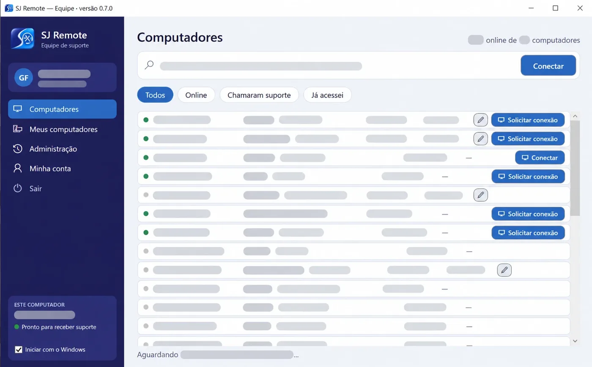
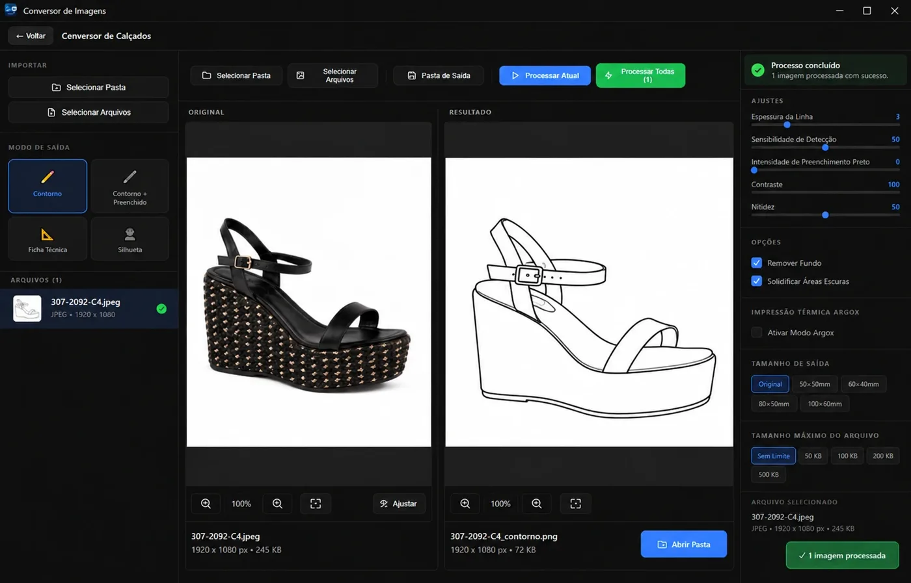
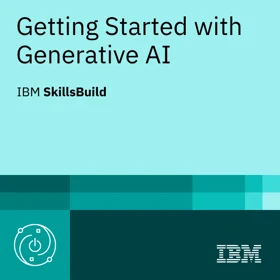

GHF-2026100×60mm
- Função
- Analista de Suporte de Sistemas
- Empresa
- SJSYS · Tutor Software
- Curso
- Sistemas de Informação
- Estudando
- Active Directory e Azure
- Idiomas
- Português · Inglês intermediário
- Status
- Aberto a oportunidades
São João Batista, SC
Analista de suporte de sistemas. Desenvolvo sites e sistemas para empresas da região.
Atuo no suporte de sistemas da SJSYS (Tutor Software), com atendimento a usuários, diagnóstico de falhas e manutenção de estações de trabalho. Também desenvolvo sites e sistemas web sob demanda, do levantamento de requisitos à publicação, com atenção a segurança e facilidade de manutenção. Curso Sistemas de Informação na UNIFEBE e venho me especializando em identidade, infraestrutura e cloud.
01 / projetos para clientes
Trabalhos feitos sob encomenda, do levantamento com o cliente à publicação. Três estão no ar; um está em desenvolvimento.

01No ar
Imobiliária · São João Batista, SC

02No ar
Nutricionista · São João Batista, SC

03No ar
Crochê artesanal · catálogo com carrinho

04Em desenvolvimento
Máquinas industriais · site e catálogo técnico
02 / sistemas e ferramentas
Projetos de trabalho, da faculdade e pessoais. Os que têm link de deploy estavam no ar na última verificação, em outubro de 2026.

Uso interno · SJSYSEm desenvolvimento
Suporte remoto para Windows da equipe da SJSYS. O técnico só acessa depois que a pessoa clica em Aceitar, e uma barra vermelha fica visível durante toda a sessão.

Indústria calçadistacódigo ↗
Transforma fotos de calçados em desenho técnico em preto e branco puro, para imprimir etiquetas nas impressoras térmicas Argox.
Painel do app Laço's de saúde feminina. Acesso de administrador verificado em três camadas: middleware, servidor e RLS no Postgres.
API Java com pipeline no GitHub Actions: build, análise de segurança e imagem no GHCR. Em dupla com Carlos A. Gatis.
Sistema de adoção para uma ONG de proteção animal, com painel administrativo. Curricularização 2025.
Painel de um clã de Clash of Clans com dados da API oficial da Supercell.
Controle de reservas e uso de quadras com Flask, templates Jinja e SQLite.
Geração de carteirinhas de identificação pela web.
Aplicação de registros feita com React e Vite.
| 2025 | AttWeather | Consumo da API do OpenWeatherMap | JS |
| 2024 | FragaTiras | Primeiro site institucional para uma empresa | HTML |
| 2024 | PingPongGame | Jogo responsivo com melhorias sobre o curso DEV Samurai | JS |
| 2024 | AnalisandoIPs | Análise de endereços IP · Programação 1 | Java |
| 2024 | GuanabaraCourse1 | Projeto do Curso em Vídeo | HTML |
| 2023 | Project_Ferrari | Loja · Desenvolvimento Web | HTML |
| 2023 | GameOfClick | Jogo de cliques em JavaScript | JS |
| 2023 | Calculadora-A3 | Calculadora e lógica em JavaScript | JS |
| 2023 | ProjetoCampoA2 | Layout do Figma convertido para HTML | HTML |
03 / experiência
Comecei como menor aprendiz na indústria, passei quatro anos no administrativo de uma fábrica de calçados e hoje trabalho com suporte de sistemas.
atual
Tutor Software · SJSYS
04 / formação
graduação · em andamento
UNIFEBE · Brusque, SC
Concluídas

Planejadas para 2026
Cursos concluídos e em andamento
05 / conhecimentos
O que já usei em projetos publicados ou no trabalho.
06 / contato
Aberto a oportunidades em suporte, infraestrutura e desenvolvimento, e a novos projetos web. Respondo por e-mail ou LinkedIn.
gustavohfraga1